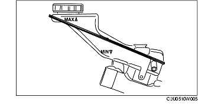

KONTROLL AV KOPPLINGSVÄTSKA
B3E051016010W01
Observera
• En gemensam behållare används för kopplings- och bromsvätska.
• Vätskenivån i behållaren måste upprätthållas mellan MIN/MAX-nivån under bytet.
Vänsterstyrning

Högerstyrning